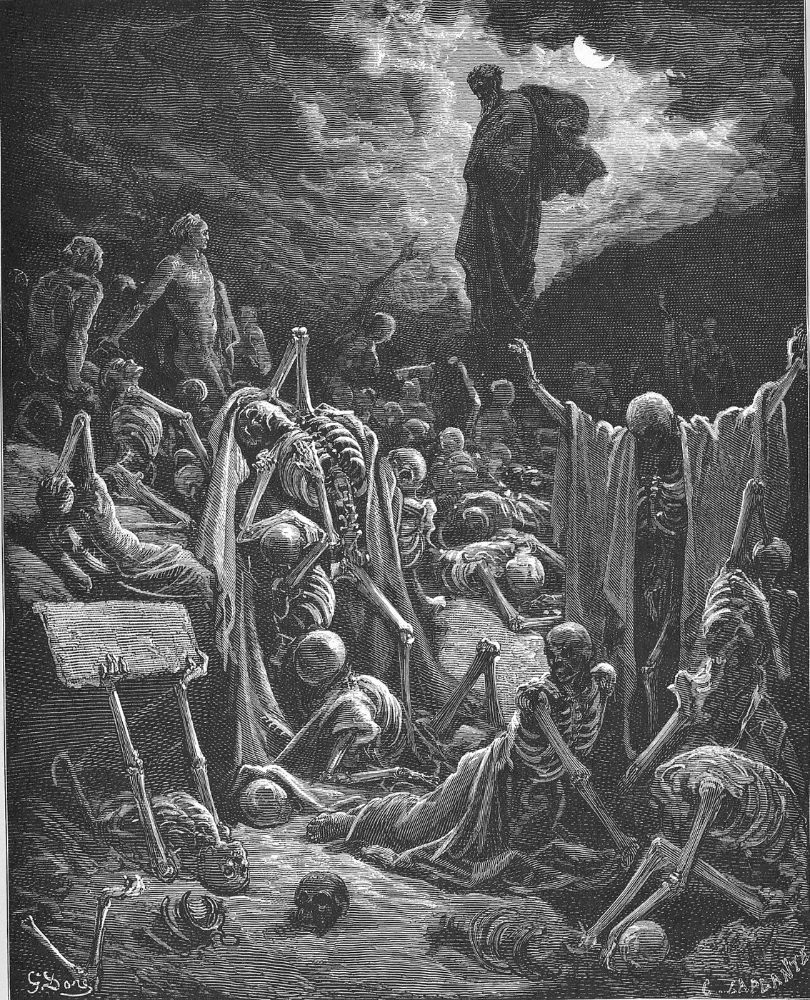

Ezekiel 37 — The Mister Translation

Ezekiel 37. Doré draws the order of verses 7 and 8 as one scene: bones joining, some already with flesh, and the prophet above them. The cloud and the moon are his, not the text’s; the Hebrew has only the valley, and does not say it was night.

Translator's Notes — verse by verse
⭐ The hand, and the spirit. “The hand of Jehovah was upon me” stands in two verses of the Hebrew Bible, here and at the vision of the new temple (Ezekiel 40:1). The prophet is carried “in the spirit of Jehovah”, beruach Yehovah, and put down in the middle of the valley, “in the middle of the valley”, which stands in this one verse; haviq‘ah is the broad valley floor where he had been told to go earlier in the book (Ezekiel 3:22, now on these pages). The KJV has “carried me out in the spirit of the Lord, and set me down in the midst of the valley”, the NIV “brought me out by the Spirit of the Lord and set me in the middle of a valley”, the NWT 1984 “brought me forth in the spirit of Jehovah and set me down in the midst of the valley plain”, the Douay “in the midst of a plain” and the TLB “a valley full of old, dry bones”.
⭐ Around and around. “And it was full of bones” stands in this one verse, and the prophet is made to walk the whole of it: saviv saviv, “round and round”, a doubling the book also uses for the measuring of the temple. What he sees is told twice, with vehineh, “and behold”: “very dry” stands in this one verse, yevesot me’od. The KJV has “there were very many in the open valley; and, lo, they were very dry”, the NIV “a great many bones on the floor of the valley, bones that were very dry”, the NWT 1984 “very many on the surface of the valley plain and, look! they were very dry” and the Douay “they were very many upon the face of the plain, and they were exceeding dry”.
⭐ The question, and the answer. “Can these bones live?” stands in this one verse, and the prophet’s answer is neither yes nor no: “Lord Jehovah, you know” stands in this one verse. The KJV has “O Lord God, thou knowest”, the NIV “Sovereign Lord, you alone know”, the NWT 1984 “you yourself well know” and the TLB “Lord, you alone know the answer to that”. For the question the NWT 1984 has “can these bones come to life?”, the TLB “Son of dust, can these bones become people again?” and the Douay “dost thou think these bones shall live?”.
⭐ Prophesy to the bones. A prophet speaks to the dead: “dry bones, hear the word of Jehovah” stands in this one verse. The KJV has “O ye dry bones, hear the word of the Lord”, the NIV “Dry bones, hear the word of the Lord!”, the NWT 1984 “O YOU dry bones, hear the word of Jehovah” and the TLB “O dry bones, listen to the words of God”. The message is a promise built from one word, ruach, breath, wind or spirit (dictionary): “I am bringing breath into you” stands in this one verse, and “and you will live”, vichyitem, stands in three verses, 5, 6 and 14. The KJV has “I will cause breath to enter into you”, the NIV “I will make breath enter you”, the NWT 1984 “Here I am bringing into YOU breath”, the TLB “I am going to make you live and breathe again” and the Douay “I will send spirit into you”.
⭐ Sinews, flesh, skin. The body is rebuilt from the inside out: gidim, sinews, then flesh, then skin, “and I will cover you with skin”, which stands in this one verse, and last the breath. The KJV has “I will lay sinews upon you”, the NIV “I will attach tendons to you”, the NWT 1984 “I will put upon YOU sinews”, the TLB “I will replace the flesh and muscles on you” and the Douay “I will lay sinews upon you”. The verse closes with the sentence the book is known for, “and you will know that I am Jehovah”, which stands in twenty-six verses, beginning at Exodus 6:7 (now on these pages); twenty-one of the twenty-six are in this book.
⭐ The sound. “And there was a sound as I prophesied” stands in this one verse, and “and behold, a rattling”, ra’ash, stands in two verses, this one and Jeremiah 4:24, where it is the mountains that shake. Then “bone to its bone” stands in this one verse. The KJV has “there was a noise, and behold a shaking, and the bones came together, bone to his bone”, the NIV “there was a noise, a rattling sound, and the bones came together, bone to bone”, the NWT 1984 “here there was a rattling, and bones began to approach, bone to its bone”, the TLB “suddenly there was a rattling noise from all across the valley” and the Douay “behold a commotion: and the bones came together, each one to its joint”.
⭐ A body with no breath. At the end of verse 8 the work is done and nothing lives: sinews, flesh, skin, “but there was no breath in them”, ve’ruach ein bahem. The KJV has “but there was no breath in them” and the Douay “but there was no spirit in them”. So the prophet is told to speak a second time, el haruach, to the breath, with the word that is also the wind: “from the four winds” stands in this one verse, and “and breathe upon these slain” stands in this one verse, with puach, to blow, to breathe, the verb under God’s breath into Adam’s nostrils (Genesis 2:7, now on these pages), and later the Gospel’s “he breathed on them” (John 20:22, now on these pages). The KJV has “Prophesy unto the wind”, the NIV “Prophesy to the breath”, the NWT 1984 “Prophesy to the wind”, the TLB “call to the wind” and the Douay “Prophesy to the spirit”.
⭐ An army. The breath comes, they live, and stand on their feet, “an army, very, very great”, which stands in this one verse; it is the vision that Revelation turns down to two bodies (Revelation 11:11, now on these pages). The KJV has “an exceeding great army”, the NIV “a vast army”, the NWT 1984 “a very, very great military force”, the TLB “a very great army” and the Douay “an exceeding great army”.
⭐ The bones are the house of Israel. The vision is explained in one line, “these bones are the whole house of Israel”, and the people’s own words are quoted: “our bones are dried up” stands in this one verse, “and our hope is lost” stands in this one verse, “we are cut off for ourselves” stands in this one verse. The KJV has “Our bones are dried, and our hope is lost: we are cut off for our parts”, the NIV “we are cut off”, the Geneva “and we are clean cut off”, the Douay “and we are cut off” and the TLB “We have become a heap of dried-out bones—all hope is gone”.
⭐ Graves opened. The answer is the opening of the graves: “I am opening your graves” stands in this one verse, and the people are brought up from them, “my people”, to the land of Israel. The KJV has “I will open your graves”, the NIV “I am going to open your graves”, the NWT 1984 “opening YOUR burial places”, the TLB “I will open your graves of exile” and the Douay “I will open your graves, and will bring you out of your sepulchres”. The TLB adds “of exile”, and the Hebrew says only qevarot, graves.
⭐ My spirit, and “spoken and done”. “And I will put my spirit in you” stands in this one verse, and the verb of the end, “I have spoken and done it”, stands in four verses: Ezekiel 17:24 and 22:14, Ezekiel 36:36 (now on these pages) and this one. The KJV has “and I shall place you in your own land”, the NIV “I will settle you in your own land”, the NWT 1984 “I will settle YOU upon YOUR soil” and the Douay “I shall make you rest upon your own land”.
⭐ Two pieces of wood. A second word comes, a second sign: “take for yourself one stick” stands in this one verse, etz, a piece of wood, and the first is written “for Judah”, the second “for Joseph, the stick of Ephraim”: “the stick of Ephraim” stands in this one verse. The two are the old division of the kingdom, Judah in the south and Joseph or Ephraim standing for the north (1 Kings 12:16, now on these pages). The KJV has “take thee one stick”, the NIV “take a stick of wood”, the NWT 1984 “take for yourself a stick”, the Geneva “take thee a piece of wood”, the Douay “take thee a stick” and the TLB “Take a stick and carve on it these words”.
⭐ One in your hand. “And they will become one”, vehayu la’achadim, stands in this one verse, with a plural of echad, one, which the verse leaves as it is: “they will become ones in your hand”. The prophet joins the two sticks, and in verse 19 the same act is Jehovah’s, “they will be one in my hand”. The writing on wood is not new: the staffs of the tribes in the wilderness each had a name on them (Numbers 17:2–3, now on these pages). The KJV has “they shall become one in thine hand”, the NIV “they will become one in your hand”, the NWT 1984 “they will actually become just one in your hand” and the Douay “they shall become one in thy hand”. The sign is done where the people can watch it: “before their eyes” (verse 20), and the question the people ask in verse 18 is the one that gives the explanation.
⭐ One nation, one king. “One nation” stands in three verses: 2 Samuel 7:23 (now on these pages), 1 Chronicles 17:21 and this one, and the first two say it of Israel as unlike any other nation on earth. “One king will be king for all of them” stands in this one verse, and “into two kingdoms” stands in this one verse, the thing the stick sign undoes. The KJV has “one nation in the land”, the NIV “one nation in the land”, the Geneva “one people in the land”, the NWT 1984 “one king is what all of them will come to have as king”, the Douay “one king shall be king over them all” and the TLB “One king shall be king of them all”.
⭐ Idols, and a cleansing. The people are no longer defiled “with their idols and with their detestable things”: the pair stands in this one verse, gillulim, the book’s word for idols (dictionary), and shiqqutsim. The KJV has “with their idols, nor with their detestable things”, the NIV “with their idols and vile images”, the NWT 1984 “with their dungy idols and with their disgusting things”, the Douay “with their idols, nor with their abominations” and the Geneva “with their idols, nor with their abominations”. Then the cleansing, vetiharti, and the formula of the covenant: “they will be my people” stands in seven verses (Jeremiah 24:7 and 32:38, Ezekiel 11:20, 14:11, this one, Zechariah 2:15 and 8:8), and “and I will be their God” stands in five, Jeremiah 32:38, Ezekiel 11:20, 14:11, this one and Zechariah 8:8. The Greek of this verse is close to Titus 2:14 (now on these pages; see the note there), and the first half of the formula is in Jeremiah 24:7 and Zechariah 2:15 (now on these pages).
⭐ A written and a read verb. In verse 22 the text writes yihyeh, “he will be”, and the reading says yihyu, “they will be”, in “they will no more be two nations”: a ketiv/qere pair, kept in the Hebrew column, with one letter between them. The KJV has “they shall be no more two nations”, the NIV “they will never again be two nations” and the NWT 1984 “they will no longer continue”.
⭐ David, king and prince. “And my servant David will be king over them” stands in this one verse, and “one shepherd” stands in this one verse; verse 25 adds “prince to them forever”, which stands in this one verse, with nasi, a prince. The promise to David is the one of 2 Samuel 7:16 (now on these pages), put into the shape of a shepherd and a king. The KJV has “David my servant shall be king over them; and they all shall have one shepherd”, the NIV “My servant David will be king over them, and they will all have one shepherd”, the NWT 1984 “and one shepherd is what they will all come to have” and the TLB “And David, my Servant—the Messiah—shall be their King, their only Shepherd”. The TLB adds “the Messiah” where the Hebrew says David, and the other versions have only the name.
⭐ The land, forever. The land is the one given to Jacob, “my servant Jacob”, and the people dwell on it “they and their sons and their sons’ sons, forever”. The KJV has “they shall dwell in the land that I have given unto Jacob my servant”, the NIV “They will live in the land I gave to my servant Jacob”, the NWT 1984 “they will actually dwell upon the land that I gave to my servant, to Jacob” and the Douay “And they shall dwell in the land which I gave to my servant Jacob”.
⭐ A covenant of peace. “A covenant of peace” stands in two verses, this one and Ezekiel 34:25 (now on these pages); its older relative is the covenant of peace given to Phinehas (Numbers 25:12, now on these pages). It is also called “an everlasting covenant”, as at Isaiah 55:3 and Isaiah 61:8 (both now on these pages). The KJV has “I will make a covenant of peace with them; it shall be an everlasting covenant”, the NIV “I will make a covenant of peace with them; it will be an everlasting covenant”, the NWT 1984 “I will conclude with them a covenant of peace”, the TLB “an everlasting pact” and the Douay “a covenant of peace with them, it shall be an everlasting covenant with them”.
⭐ My sanctuary, my dwelling. “And I will set my sanctuary in their midst” stands in this one verse, and “and my dwelling will be over them” stands in this one verse; the Hebrew has aleihem, “over them”, where most English has “with”, and the sentence is the one of the tabernacle itself (Leviticus 26:11, now on these pages: “I will set my dwelling in your midst”). The KJV has “My tabernacle also shall be with them”, the NIV “My dwelling place will be with them”, the NWT 1984 “my tabernacle will actually prove to be over them”, the TLB “I will make my home among them” and the Douay “my tabernacle shall be with them”.
⭐ Who sanctifies Israel. The chapter ends with the nations: “who sanctifies Israel” stands in this one verse, and it is the idea of the Sabbath sign (Exodus 31:13, now on these pages: “that I am Jehovah who sanctifies you”). The KJV has “I the Lord do sanctify Israel”, the NIV “I the Lord make Israel holy”, the NWT 1984 “I, Jehovah, am sanctifying Israel”, the Douay “I am the Lord the sanctifier of Israel” and the TLB “I, the Lord, have chosen Israel as my very own”.
Patterns worth carrying forward
Where this translation keeps the words exact and distinct: “breath” for ruach when it enters the bones, with “spirit” where it is Jehovah’s (verses 1 and 14); “sinews” for gidim; “graves” for qevarot; “stick” for etz; “one nation” and “one king”; “detestable things” for shiqqutsim; “a covenant of peace” and “an everlasting covenant”; “my dwelling” for mishkani and “my sanctuary” for miqdashi; “the Lord Jehovah” for Adonai Yehovih and “Jehovah” for the name. The Hebrew has one written and read note in this chapter, at verse 22, where the text has yihyeh and the reading yihyu, “will be”, a difference of one letter.
Echoes paid. The recognition formula of Exodus 6:7; the breath of Genesis 2:7 and John 20:22; the two bodies of Revelation 11:11; the division of 1 Kings 12:16; the staffs of Numbers 17:2–3; the one nation of 2 Samuel 7:23; the people of Jeremiah 24:7 and Zechariah 2:15; the cleansing of Titus 2:14; David’s house in 2 Samuel 7:16; the covenant of peace of Numbers 25:12; the everlasting covenant of Isaiah 55:3 and 61:8; the dwelling of Leviticus 26:11; and the sanctifying of Exodus 31:13; and the “spoken and done” of Ezekiel 36:36.
Echoes planted. The other “hand of Jehovah” (Ezekiel 40:1) and the valley of Ezekiel 3:22 (now on these pages); the earthquake of Jeremiah 4:24; the other “I have spoken and done” (Ezekiel 17:24 and 22:14); one nation in 1 Chronicles 17:21; and the other places the people formula stands (Jeremiah 32:38, Ezekiel 11:20, 14:11, Zechariah 8:8). None of the others is translated here yet.
⚠ A note on order: Ezekiel stands on these pages at chapters 1, 2, 3, 4, 5, 6, 34, 36 and 37, chosen by how often a passage is read rather than in sequence. The sequential thread is unchanged: next in sequence is Ezekiel 7.